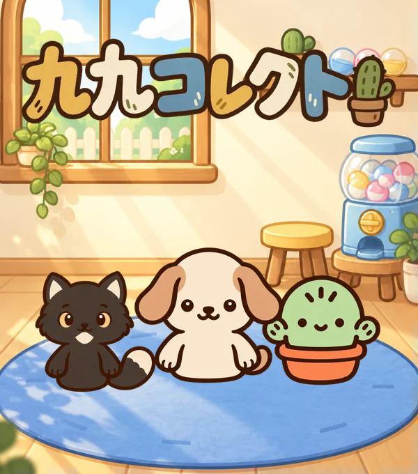

さんすう九九・かけざん
九九コレクト
九九をおぼえて、なかまをあつめよう！
「ににんがし」を聞いて、声に出してみよう。もんだいでポイントをためたら、ガチャでなかまをおむかえ！
- 小学2年生ごろから
- なかまを あつめる
- むりょう

あそびかた
九九をきく
1の段から9の段まで、九九の言い方を聞いて声に出します。
もんだいにこたえる
九九の穴うめでポイントをためます。
なかまをおむかえ
最初のガチャは無料。集めたなかまをおへやに置けます。
ゲームの がめん
ガチャで迎えたなかまと過ごすおへや。
九九の言い方を聞いて、声に出して覚えます。
九九の穴うめに答えて、ポイントをためます。
保護者の方へ
ブラウザで遊べる無料の九九練習ゲームです。進みぐあいは端末のブラウザに保存されます。「あそびかた」からセーブの書き出しや復元ができます。